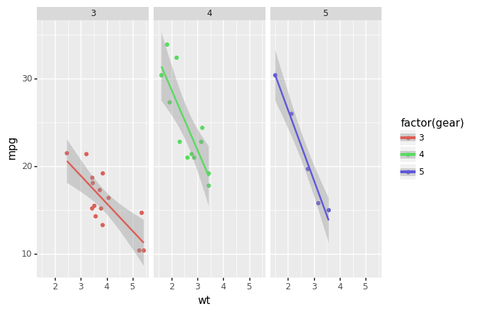

(Remember that to use these, you will need to run pip install packagename on the command line.)
1. Jazzit
Sound on for this one. Jazzit’s docs say: > “Ever wanted your scripts to play music while running/ on erroring out? Of course you didn’t. But here it is anyway”.
Yes, this package laughs at you when you get a runtime error – but can also celebrate your success when the code runs. Apart from being good fun, this package demonstrates how the decorator function @ is used.
See also: beepy
Example of Jazzit
from jazzit import error_track, success_track
@error_track("curb_your_enthusiasm.mp3", wait=9)
def run():
print(1/0)
run()Traceback (most recent call last):
File "/opt/anaconda3/envs/noodling/lib/python3.8/site-packages/jazzit/jazz.py", line 47, in wrapped_function
original_func(*args)
File "/var/folders/x6/ffnr59f116l96_y0q0bjfz7c0000gn/T/ipykernel_89075/4032939987.py", line 5, in run
print(1/0)
ZeroDivisionError: division by zero@success_track("anime-wow.mp3")
def add(a,b):
print(a+b)
add(10, 5)152. Handcalcs
In research, you often find yourself coding up maths and then transcribing the same maths into text (usually via typesetting language Latex). This is bad practice; do not repeat yourself suggests you should write the maths once, and once alone. Handcalcs helps with this: it can render maths in the console and export to latex equations.

See also: if you want to solve, render, and export latex equations, you should try out sympy, a fully fledged library for symbolic mathematics (think Maple).
Example of handcalcs
import handcalcs.render
from math import sqrtTo render maths, just use the %%render magic keyword. If you’re running in an enviroment that doesn’t have a Latex installation, this will just show Latex – if you want the Latex, use the %%tex magic keyword instead. But in a Jupyter notebook on a machine with Latex installed, the %%render magic will render the maths into beautifully typeset equations:
%%render
a = 2
b = 3
c = sqrt(2*a + b/3)]
%%tex
a = 2
b = 3
c = sqrt(2*a + b/3)\[
\begin{aligned}
a &= 2 \;
\\[10pt]
b &= 3 \;
\\[10pt]
c &= \sqrt { 2 \cdot a + \frac{ b }{ 3 } } = \sqrt { 2 \cdot 2 + \frac{ 3 }{ 3 } } &= 2.236
\end{aligned}
\]3. Matplotlib!?
Alright, you’ve probably heard of matplotlib and might be surprised to see it on this list. But there’s a nice new feature of matplotlib that you might not be aware of: placement using ASCII art. It’s more useful than it sounds.
Sometimes (especially for science papers), you need a weird arrangement of panels within a figure. Specifying that so that it’s exactly right is a big pain. This is where the new matplotlib mosiac subplot option comes in.
Note that you may need to restart the runtime after you have pip installed matplotlib below.
See also: if you like declarative plotting that’s web-friendly and extremely high quality, Altair is definitely worth your time.
Example of matplotlib mosaics
import matplotlib.pyplot as plt
axd = plt.figure(constrained_layout=True).subplot_mosaic(
"""
TTE
L.E
""")
for k, ax in axd.items():
ax.text(0.5, 0.5, k,
ha='center', va='center', fontsize=36,
color='darkgrey')
plt.show()
But it’s not just ASCII that you can use, lists work too:
axd = plt.figure(constrained_layout=True).subplot_mosaic(
[['.', 'histx'],
['histy', 'scat']]
)
for k, ax in axd.items():
ax.text(0.5, 0.5, k,
ha='center', va='center', fontsize=36,
color='darkgrey')
4. Pandas profiling
Any tool that can make the process of understanding input data is very welcome, which is why the pandas profiling library is such a breath of fresh air. It automates, or at least facilitates, the first stage of exploratory data analysis.
What pandas profiling does is to render a HTML or ipywidget report (or JSON string) of the datatset - including missing variables, cardinality, distributions, and correlations. From what I’ve seen, it’s really comprehensive and user-friendly—though I have noticed that the default configuration does not scale well to very large datasets.
Due to the large size of the reports, I won’t run one in this notebook, although you can with profile.to_notebook_iframe(), but instead link to a gif demoing the package.
See also: SweetViz
Example of pandas profiling
import pandas as pd
from pandas_profiling import ProfileReport
data = pd.read_csv('https://raw.githubusercontent.com/datasciencedojo/datasets/master/titanic.csv')
# To run the profile report use:
profile = ProfileReport(data, title="Titanic Dataset", html={'style': {'full_width': True}})
# To display in a notebook:
profile.to_notebook_iframe()
5. Pandera data validation
Sometimes you want to validate data, not just explore it. A number of packages have popped up to help do this recently. Pandera is geared towards pandas dataframes and validation within a file or notebook. It can be used to check that a given dataframe has the data that you’d expect.
See also: Great Expectations, which produces HTML reports a bit like our number 3. featured above. Great Expectations looks really rich and suitable for production, coming as it does with a command line interface.
Example of pandera
Let’s start with a dataframe that passes muster.
import pandas as pd
import pandera as pa
# data to validate
df = pd.DataFrame({
"column1": [1, 4, 0, 10, 9],
"column2": [-1.3, -1.4, -2.9, -10.1, -20.4],
"column3": ["value_1", "value_2", "value_3", "value_2", "value_1"],
})
# define schema
schema = pa.DataFrameSchema({
"column1": pa.Column(int, checks=pa.Check.less_than_or_equal_to(10)),
"column2": pa.Column(float, checks=pa.Check.less_than(-1.2)),
"column3": pa.Column(str, checks=[
pa.Check.str_startswith("value_"),
# define custom checks as functions that take a series as input and
# outputs a boolean or boolean Series
pa.Check(lambda s: s.str.split("_", expand=True).shape[1] == 2)
]),
})
validated_df = schema(df)
print(validated_df) column1 column2 column3
0 1 -1.3 value_1
1 4 -1.4 value_2
2 0 -2.9 value_3
3 10 -10.1 value_2
4 9 -20.4 value_1This passed, as expected. But now let’s try the same schema with data that shouldn’t pass by changing the first value of the second column to be greater than -1.2:
df = pd.DataFrame({
"column1": [1, 4, 0, 10, 9],
"column2": [22, -1.4, -2.9, -10.1, -20.4],
"column3": ["value_1", "value_2", "value_3", "value_2", "value_1"],
})
validated_df = schema(df)
print(validated_df)---------------------------------------------------------------------------
SchemaError Traceback (most recent call last)
Input In [11], in <module>
1 df = pd.DataFrame({
2 "column1": [1, 4, 0, 10, 9],
3 "column2": [22, -1.4, -2.9, -10.1, -20.4],
4 "column3": ["value_1", "value_2", "value_3", "value_2", "value_1"],
5 })
----> 7 validated_df = schema(df)
8 print(validated_df)
File /opt/anaconda3/envs/noodling/lib/python3.8/site-packages/pandera/schemas.py:768, in DataFrameSchema.__call__(self, dataframe, head, tail, sample, random_state, lazy, inplace)
740 def __call__(
741 self,
742 dataframe: pd.DataFrame,
(...)
748 inplace: bool = False,
749 ):
750 """Alias for :func:`DataFrameSchema.validate` method.
751
752 :param pd.DataFrame dataframe: the dataframe to be validated.
(...)
766 otherwise creates a copy of the data.
767 """
--> 768 return self.validate(
769 dataframe, head, tail, sample, random_state, lazy, inplace
770 )
File /opt/anaconda3/envs/noodling/lib/python3.8/site-packages/pandera/schemas.py:503, in DataFrameSchema.validate(self, check_obj, head, tail, sample, random_state, lazy, inplace)
490 check_obj = check_obj.map_partitions(
491 self._validate,
492 head=head,
(...)
498 meta=check_obj,
499 )
501 return check_obj.pandera.add_schema(self)
--> 503 return self._validate(
504 check_obj=check_obj,
505 head=head,
506 tail=tail,
507 sample=sample,
508 random_state=random_state,
509 lazy=lazy,
510 inplace=inplace,
511 )
File /opt/anaconda3/envs/noodling/lib/python3.8/site-packages/pandera/schemas.py:677, in DataFrameSchema._validate(self, check_obj, head, tail, sample, random_state, lazy, inplace)
675 check_results.append(check_utils.is_table(result))
676 except errors.SchemaError as err:
--> 677 error_handler.collect_error("schema_component_check", err)
678 except errors.SchemaErrors as err:
679 for schema_error_dict in err.schema_errors:
File /opt/anaconda3/envs/noodling/lib/python3.8/site-packages/pandera/error_handlers.py:32, in SchemaErrorHandler.collect_error(self, reason_code, schema_error, original_exc)
26 """Collect schema error, raising exception if lazy is False.
27
28 :param reason_code: string representing reason for error
29 :param schema_error: ``SchemaError`` object.
30 """
31 if not self._lazy:
---> 32 raise schema_error from original_exc
34 # delete data of validated object from SchemaError object to prevent
35 # storing copies of the validated DataFrame/Series for every
36 # SchemaError collected.
37 del schema_error.data
File /opt/anaconda3/envs/noodling/lib/python3.8/site-packages/pandera/schemas.py:669, in DataFrameSchema._validate(self, check_obj, head, tail, sample, random_state, lazy, inplace)
667 for schema_component in schema_components:
668 try:
--> 669 result = schema_component(
670 df_to_validate,
671 lazy=lazy,
672 # don't make a copy of the data
673 inplace=True,
674 )
675 check_results.append(check_utils.is_table(result))
676 except errors.SchemaError as err:
File /opt/anaconda3/envs/noodling/lib/python3.8/site-packages/pandera/schemas.py:2004, in SeriesSchemaBase.__call__(self, check_obj, head, tail, sample, random_state, lazy, inplace)
1993 def __call__(
1994 self,
1995 check_obj: Union[pd.DataFrame, pd.Series],
(...)
2001 inplace: bool = False,
2002 ) -> Union[pd.DataFrame, pd.Series]:
2003 """Alias for ``validate`` method."""
-> 2004 return self.validate(
2005 check_obj, head, tail, sample, random_state, lazy, inplace
2006 )
File /opt/anaconda3/envs/noodling/lib/python3.8/site-packages/pandera/schema_components.py:223, in Column.validate(self, check_obj, head, tail, sample, random_state, lazy, inplace)
219 validate_column(
220 check_obj[column_name].iloc[:, [i]], column_name
221 )
222 else:
--> 223 validate_column(check_obj, column_name)
225 return check_obj
File /opt/anaconda3/envs/noodling/lib/python3.8/site-packages/pandera/schema_components.py:196, in Column.validate.<locals>.validate_column(check_obj, column_name)
195 def validate_column(check_obj, column_name):
--> 196 super(Column, copy(self).set_name(column_name)).validate(
197 check_obj,
198 head,
199 tail,
200 sample,
201 random_state,
202 lazy,
203 inplace=inplace,
204 )
File /opt/anaconda3/envs/noodling/lib/python3.8/site-packages/pandera/schemas.py:1962, in SeriesSchemaBase.validate(self, check_obj, head, tail, sample, random_state, lazy, inplace)
1956 check_results.append(
1957 _handle_check_results(
1958 self, check_index, check, check_obj, *check_args
1959 )
1960 )
1961 except errors.SchemaError as err:
-> 1962 error_handler.collect_error("dataframe_check", err)
1963 except Exception as err: # pylint: disable=broad-except
1964 # catch other exceptions that may occur when executing the
1965 # Check
1966 err_msg = f'"{err.args[0]}"' if len(err.args) > 0 else ""
File /opt/anaconda3/envs/noodling/lib/python3.8/site-packages/pandera/error_handlers.py:32, in SchemaErrorHandler.collect_error(self, reason_code, schema_error, original_exc)
26 """Collect schema error, raising exception if lazy is False.
27
28 :param reason_code: string representing reason for error
29 :param schema_error: ``SchemaError`` object.
30 """
31 if not self._lazy:
---> 32 raise schema_error from original_exc
34 # delete data of validated object from SchemaError object to prevent
35 # storing copies of the validated DataFrame/Series for every
36 # SchemaError collected.
37 del schema_error.data
File /opt/anaconda3/envs/noodling/lib/python3.8/site-packages/pandera/schemas.py:1957, in SeriesSchemaBase.validate(self, check_obj, head, tail, sample, random_state, lazy, inplace)
1954 for check_index, check in enumerate(self.checks):
1955 try:
1956 check_results.append(
-> 1957 _handle_check_results(
1958 self, check_index, check, check_obj, *check_args
1959 )
1960 )
1961 except errors.SchemaError as err:
1962 error_handler.collect_error("dataframe_check", err)
File /opt/anaconda3/envs/noodling/lib/python3.8/site-packages/pandera/schemas.py:2353, in _handle_check_results(schema, check_index, check, check_obj, *check_args)
2351 warnings.warn(error_msg, UserWarning)
2352 return True
-> 2353 raise errors.SchemaError(
2354 schema,
2355 check_obj,
2356 error_msg,
2357 failure_cases=failure_cases,
2358 check=check,
2359 check_index=check_index,
2360 check_output=check_result.check_output,
2361 )
2362 return check_result.check_passed
SchemaError: <Schema Column(name=column2, type=DataType(float64))> failed element-wise validator 0:
<Check less_than: less_than(-1.2)>
failure cases:
index failure_case
0 0 22.0As expected, this throws a “schema error” that is informative about what went wrong and what value caused it. Finding ‘bad’ data is the first step in cleaning it up, so this library and the others like it that are appearing could be really useful.
6. Tenacity
If at first you don’t succeed, try and try again. Tenacity has several options to keep trying a function, even if execution fails. The names of the available function decorators give a clear indication as to what they do – retry, stop_after_attempt, stop_after_delay, wait_random, and there’s even a wait_exponential.
See also: R package purrr’s insistently function.
Example of Tenacity
from tenacity import retry, stop_after_attempt
@retry(stop=stop_after_attempt(3))
def test_func():
print("Stopping after 3 attempts")
raise Exception
print(test_func())Stopping after 3 attempts
Stopping after 3 attempts
Stopping after 3 attempts
---------------------------------------------------------------------------
Exception Traceback (most recent call last)
File /opt/anaconda3/envs/noodling/lib/python3.8/site-packages/tenacity/__init__.py:407, in Retrying.__call__(self, fn, *args, **kwargs)
406 try:
--> 407 result = fn(*args, **kwargs)
408 except BaseException: # noqa: B902
Input In [13], in test_func()
5 print("Stopping after 3 attempts")
----> 6 raise Exception
Exception:
The above exception was the direct cause of the following exception:
RetryError Traceback (most recent call last)
Input In [13], in <module>
5 print("Stopping after 3 attempts")
6 raise Exception
----> 8 print(test_func())
File /opt/anaconda3/envs/noodling/lib/python3.8/site-packages/tenacity/__init__.py:324, in BaseRetrying.wraps.<locals>.wrapped_f(*args, **kw)
322 @functools.wraps(f)
323 def wrapped_f(*args: t.Any, **kw: t.Any) -> t.Any:
--> 324 return self(f, *args, **kw)
File /opt/anaconda3/envs/noodling/lib/python3.8/site-packages/tenacity/__init__.py:404, in Retrying.__call__(self, fn, *args, **kwargs)
402 retry_state = RetryCallState(retry_object=self, fn=fn, args=args, kwargs=kwargs)
403 while True:
--> 404 do = self.iter(retry_state=retry_state)
405 if isinstance(do, DoAttempt):
406 try:
File /opt/anaconda3/envs/noodling/lib/python3.8/site-packages/tenacity/__init__.py:361, in BaseRetrying.iter(self, retry_state)
359 if self.reraise:
360 raise retry_exc.reraise()
--> 361 raise retry_exc from fut.exception()
363 if self.wait:
364 sleep = self.wait(retry_state=retry_state)
RetryError: RetryError[<Future at 0x7f9f10f73eb0 state=finished raised Exception>]7. Streamlit
I really like streamlit, which sells itself as the fastest way to build data apps that are displayed in a browser window. And my experience is that it’s true; you can do a lot with a very simple set of commands. But there’s also depth there too - a couple of the examples on their site show how streamlit can serve up explainable AI models. Very cool.
If you build a streamlit app and want to host it on the web, Streamlit and Heroku offer free hosting.
Because streamlit serves up content in a browser, it’s not (currently) possible to demonstrate it in a Jupyter Notebook. However, this gif gives you an idea of how easy it is to get going:

See also: Dash
8. Black
Black is an uncompromising code formatter (“you can have it any colour you want, as long as it’s black”). Lots of people will find it overbearing, and think the way it splits code across lines is distracting. However, if you want to easily and automatically implement a code style – without compromise – then it’s great and you can even set it up as a github action to run on your code every time you commit. Less time formatting sounds good to me.
Black is run from the command line or via IDE integration, so the example here is just a before and after of what happens to a function definition:
# in:
def very_important_function(template: str, *variables, file: os.PathLike, engine: str, header: bool = True, debug: bool = False):
"""Applies `variables` to the `template` and writes to `file`."""
with open(file, 'w') as f:
...
# out:
def very_important_function(
template: str,
*variables,
file: os.PathLike,
engine: str,
header: bool = True,
debug: bool = False,
):
"""Applies `variables` to the `template` and writes to `file`."""
with open(file, "w") as f:
...See also: yapf, yet another code formatter, from Google.
Live demo
9. Pyinstrument for profiling code
Profiling is about finding where the bottlenecks are in your code; potentially in your data too.
pyinstrument is a simple-to-use tool that extends the built-in Python profiler with HTMLs output that can be rendered in a Jupyter notebook cell.
Using this profiler is very simple – just wrap ‘start’ and ‘stop’ function calls around the code you’re interested in and show the results in text or HTML. The HTML report is interactive. To use the HTML report in a Jupyter notebook, you’ll need to use
from IPython.core.display import display, HTMLand then
display(HTML(profiler.output_html()))In the example below, I’ll use the display as text option.
See also: scalene, which I almost featured instead because it profiles both code and memory use (important for data science). However, it isn’t supported on Windows (yet?) and it doesn’t seem to display a report inline in Jupyter notebooks.
Example of Pyinstrument
9. Pyinstrument for profiling code
Profiling is about finding where the bottlenecks are in your code; potentially in your data too.
pyinstrument is a simple-to-use tool that extends the built-in Python profiler with HTMLs output that can be rendered in a Jupyter notebook cell.

Using this profiler is very simple – just wrap ‘start’ and ‘stop’ function calls around the code you’re interested in and show the results in text or HTML. The HTML report is interactive. To use the HTML report in a Jupyter notebook, you’ll need to use
from IPython.core.display import display, HTMLand then
display(HTML(profiler.output_html()))In the example below, I’ll use the display as text option.
See also: scalene, which I almost featured instead because it profiles both code and memory use (important for data science). However, it isn’t supported on Windows (yet?) and it doesn’t seem to display a report inline in Jupyter notebooks.
Example of Pyinstrument
Run this code in a notebook to check it out.
from pyinstrument import Profiler
profiler = Profiler()
profiler.start()
def fibonacci(n):
if n < 0:
raise Exception("BE POSITIVE!!!")
elif n == 1:
return 0
elif n == 2:
return 1
else:
return fibonacci(n - 1) + fibonacci(n - 2)
fibonacci(20)
profiler.stop()
print(profiler.output_text(unicode=True, color=True))10. Alive progress
alive-progress is a bit less straitlaced than tdqm but is unfortunately not yet available in notebooks. Here’s a gif that shows how it looks when run from a console launched on the command line.

See also: tdqm

Live demo of alive progress
Bonus: R-style analysis in Python!?
Some data scientists swear by two of R’s most loved declarative packages, one for data analysis (dplyr) and one for plotting (ggplot2), and miss them when they do a project in Python. Although certainly not as well developed as the original packages, there are Python-inspired equivalents of both, called siuba and plotnine respectively.
It’s worth noting that there are imperative and declarative plotting libraries. In imperative libraries, you often specify all of the steps to get the desired outcome, while in declarative libraries you often specify the desired outcome without the steps. Imperative plotting gives more control and some people may find each step clearer to read, but it can also be fiddly and cumbersome, especially with simple plots. Declarative plotting trades away control and flexibility in favour of tried and tested processes that can quickly produce good-looking standardised charts, but the specialised syntax can be a barrier for newcomers.
ggplot/plotnine are both declarative, while matplotlib is imperative.
As for data analysis, Python’s pandas library is very similar to dplyr, it just has slightly different names for functions (eg summarize versus aggregate but both use groupby) and pandas uses . while dplyr tends to use %>% to apply the output of one function to the input of another.
Plotnine
from plotnine import *
from plotnine.data import mtcars
(ggplot(mtcars, aes('wt', 'mpg', color='factor(gear)'))
+ geom_point()
+ stat_smooth(method='lm')
+ facet_wrap('~gear'))
Siuba
Siuba is more or less similar to dplyr in R. It even has a pipe operator - although in Python’s pandas data analysis package, . usually plays the same role as the pipe in dplyr.
from siuba import group_by, summarize, mutate, _
from siuba.data import mtcars
mtcars.head()| mpg | cyl | disp | hp | drat | wt | qsec | vs | am | gear | carb | |
|---|---|---|---|---|---|---|---|---|---|---|---|
| 0 | 21.0 | 6 | 160.0 | 110 | 3.90 | 2.620 | 16.46 | 0 | 1 | 4 | 4 |
| 1 | 21.0 | 6 | 160.0 | 110 | 3.90 | 2.875 | 17.02 | 0 | 1 | 4 | 4 |
| 2 | 22.8 | 4 | 108.0 | 93 | 3.85 | 2.320 | 18.61 | 1 | 1 | 4 | 1 |
| 3 | 21.4 | 6 | 258.0 | 110 | 3.08 | 3.215 | 19.44 | 1 | 0 | 3 | 1 |
| 4 | 18.7 | 8 | 360.0 | 175 | 3.15 | 3.440 | 17.02 | 0 | 0 | 3 | 2 |
(mtcars
>> mutate(normalised = (_.hp - _.hp.mean())/_.hp.std())
>> group_by(_.cyl)
>> summarize(norm_hp_mean = _.normalised.mean())
)| cyl | norm_hp_mean | |
|---|---|---|
| 0 | 4 | -0.934196 |
| 1 | 6 | -0.355904 |
| 2 | 8 | 0.911963 |